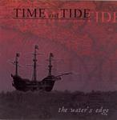

| Artist: | Time And Tide |
| Title: | The Waters Edge |
| Label: | Sea Room Records SRR-002 |
| Length(s): | 70 minutes |
| Year(s) of release: | 2004 |
| Month of review: | [02/2005] |
| 1) | Wasteland | 13.04 |
| 2) | Time Away | 3.55 |
| 3) | All | 5.53 |
| 4) | Media | 6.31 |
| 5) | Gemini | 4.53 |
| 6) | Fortress | 4.56 |
| 7) | Pilot - Dream Of The Pilot | 8.33 |
| 8) | Pilot - Siren Song | 3.28 |
| 9) | Pilot - Guidance | 3.04 |
| 10) | Pilot - No Stars To Guide | 3.57 |
| 11) | Pilot - Wind And Current | 6.26 |
| 12) | Pilot - Legens Of The Sea | 1.27 |
| 13) | Pilot - I Am The Pilot | 4.23 |
Time Away starts as a ballad with lingering and atmospheric guitars. This atmosphere is sweetly disturbed by Bedard's initially slow vocals, untill he starts yelling halfway through. AAARGH! What did you have to go and do that for?
All is more pumpy, with Bedard's hysteria kicking off right away. There really is no way of listening around this man's hollering, apparently devoid of technique.
Media as previous tracks has a nice keyboard twinkle, but the rhythm is uninspired, the guitar unoriginal and the vocals off into neverland. And the media voice over has been done a little too often to add much.
Gemini starts off with acoustic guitars and adds some tacky synths halfway through (hadn't had those yet). Fortress doesn't bring anything new.
Frankly, after what's gone before the thought of a 31 minute epic really scares me. On Part 1 we get a four minute intro, before Bedard starts actually singing. Now there's a surprise. Anyway, it doesn't last long unfortunately, but it's good to know he can sing. After this the track just continues, the only difference being that it's, well, long, really.